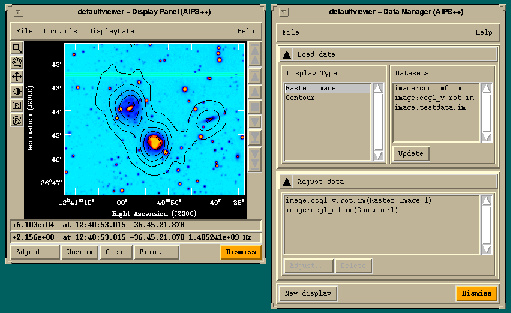

| AIPS++ Site | Nov-Mar | Apr-Oct |
|---|---|---|
| New South Wales | +11:00 | +10:00 |
| Netherlands | +01:00 | +02:00 |
| Universal Time | 00:00 | 00:00 |
| Virginia | -05:00 | -04:00 |
| Illinois | -06:00 | -05:00 |
| New Mexico | -07:00 | -06:00 |
|
September 1999 | |
|
Table of Contents:
Accessing
|
The AIPS++
Viewer
and
ImageFitter
Tools Neil Killeen and David Barnes, ATNF, Epping
In this article, we introduce the AIPS++ Viewer and Imagefitter tools. The Viewer is the first tool which was built with the AIPS++ Display Library, which was introduced in the March and November 1998 AIPS++ Newsletters. It provides flexible display and hardcopy services for Images and Glish arrays. The Imagefitter is another new AIPS++ tool which provides an innovative, interactive approach to fitting various components to image-plane sources. It uses some of the advanced Viewer services to get input from the user.
The Viewer Highlights of Viewer include:
You can start the Viewer from either the Tool Manager GUI or from the Command Line window. For example,
include 'viewer.g'
at which point two new GUIs appear on the screen, entitled Data Manager and Display Panel. In the example shown below, we first clicked on Raster Image under Display Type, and then on "image:ccg1\_v.rot.im" producing a tool which draws a rastered view of this optical image. This added the entry "image:ccg1\_v.rot.im(Raster Image:1)" to the Adjust Data list. We then selected Contour followed by "image:ccg1\_m0.im" producing a tool to draw contours of this HI moment map. Then we simply selected Register All from the Display Data menu of the Display Panel GUI, and an overlay of the HI contours on the optical image was generated. Clicking Adjust in the bottom left corner of the Display Panel GUI allows us to select a new colormap for the optical image, and add axis labels to the image. Note the two positions listed below the display and above the buttons: the upper one shows the value and position of the cursor on the optical image; and the second shows the value and position of the cursor on the moment map. The moment map has an additional axis (frequency), so the value along that axis is also displayed.

An alternative to the Viewer tool interface is to construct an AIPS++ Image tool, and then use its view tool function to display the image. For example,
include 'image.g' brings up a Display Panel GUI with a raster display of the image as shown below - after you have also designated a polygonal region and worked out some statistics.
The Imagefitter
The Imagefitter uses the following AIPS++ components
You can start the Imagefitter from either the Tool Manager GUI or from the Command Line window
include 'imagefitter.g' where 'hcn.m0' is the name of an AIPS++ image file ( you could also supply the argument infile to image tool, viz, im := image('hcn.m0')). With the Imagefitter you can subtract the model from the image as you proceed. By default, a copy of the input image is made and that is the image from which the subtraction is done. You subtract from the input image with argument the modify=T (as in the example above). Issuing the above command brings up a GUI as shown in the following figure (where we have performed some extra steps, as discussed below). This GUI shows a display of the image to the right. Beneath the image is a listbox showing the parameters of the model fits. To the left are the ranges for the residuals of the fits. At the top is a histogram and some statistics. Below that is an image of the residuals in the fitted region. A rollup window beneath the data displays (labeled Fitting Control) gives you selection of types (gaussian, point, and disk - currently only gaussian is implemented) of models (menu labeled Types), control over which parameters of the model are fixed and which are solved for (menu Fixed), whether you subtract the model from the image or not (check box Subtract) and control over the pixel ranges included in the fitting process (panel Pixel Range). Finally, a message line below the rollup window provides information on what to do next. The Imagefitter constrains you as much as it can so that the only things you can do are valid! In this example in the Figure, we have marked a box region on the image. This is done by clicking your left mouse button on the box region icon of the control box to the left of the main image display. After dragging out the region, a double click of the button inside the region signifies that the region is ready. The fit of the selected model (a gaussian) is done, the residuals are displayed, and the parameters are written into the scrolling list box. At this point, you may press the accept or reject button to signify whether or not you are happy with the fit. If you accept the fit, and the Subtract box is checked, then the fit is subtracted from the main display. You can then create another region and do another fit. When you accept a fit, an internal list is kept of the model fits. These are stored in a standard AIPS++ Componentlist tool which can be recovered from the Imagefitter tool at any time. They can be used with the synthesis imaging tools for specifying source component models. Also, when you accept a fit the region for which the fit was generated is also stored in an internal list. Under the File menu at the top left of the GUI are items that enable you to delete regions from that list if you desire, or save those regions to an AIPS++ Table. For example, because AIPS++ images are themselves Tables, you can store the regions in the image with which you performed the fits. You can also recover these regions from a table and automatically fit them. Also under the File menu is an item that allows you to store the Componentlist as a Table. In this way you can permanently store component lists. Future enhancements to Imagefitter will include the following.
|
|
The AIPS++ Viewer
Accessing
|
Accessing AIPS++ Tables from Glish Ger van Diepen, NFRA, Dwingeloo Introduction Tables are the main storage mechanism for AIPS++ data. The concepts of AIPS++ Tables are discussed in an article in the AIPS++ Newsletter of November 1998. This article discusses how an AIPS++ Table can be accessed from the Glish level. It is assumed that you are familiar with the Table concept and with the syntax of Glish. The Table tool makes it possible to access a Table. This tool is defined in the script file table.g. It has functions which make it possible to open or create a Table, get or put data, query the Table, or browse the Table. Each of these topics are described in detail in the help information; in this article only the most important functions are discussed.
Investigating a Table
include 'table.g'
t := table ('9903770.MS'); # open the table
t.summary();
t.browse();
t.close();
In order to keep memory usage down, you should close a Table when it is not needed anymore. It may also reduce file locking overhead when the same Table is used in another process. The Table Browser GUI is a very powerful tool. It is possible to view the contents of keywords and columns, to browse through a sub-Table, or to select a subset of the Table. The only disadvantage is that it can be slow for larger Tables. You can browse through a subset of data by using the query function and typing the following on the Command Line window:
t := table ('9903770.MS');
t1 := t.query ('ANTENNA1==1 && ANTENNA2==3');
t.close();
t1.browse();
t1.close();
The query function creates a subset of the Table by selecting the rows matching the given criteria. The resulting subset is a Table in itself. The query function is very powerful.. It is based on the Table Query Language (TaQL) described in Note 199. The query function has string arguments for the various parts of a TaQL expression:
Viewing all baselines in a Measurement Set can be done by typing the following in the Command Line window:
t := table ('9903770.MS');
t1 := t.query (sortlist='NODUPLICATES ANTENNA1, ANTENNA2');
t1.browse();
t.close();
t1.close();
Here the query function only executes a sort on the Table while skipping all duplicates. This results in all baselines being used in the Measurement Set.
Fixing incorrect data in a Table
t := table ('9903770.MS');
ta := table (t.getkeyword ("SYSCAL"), readonly=F); # 1
t.close(); # 2
ta1 := ta.query ('ANTENNA_ID==0'); # 3
ta.close();
ta2 := ta1.query (sortlist='NODUPLICATES TIME'); # 4
nrow := ta2.nrows();
ta2.close(); # 5
if (ta1.nrows() != 2*nrow) { # 6
ta1.close();
fail 'Incorrect antennas';
}
ta2 := ta1.query ('rownumber()%2 == 0'); # 7
vec := array(7, nrow); # 8
ta2.putcol ('ANTENNA_ID', vec);
ta2.close(); # 9
ta1.close();
You can be a bit smarter by using the striding possibilities of putcol and replacing Step 7 and 8 with:
vec := array(7, nrow);
ta1.putcol ('ANTENNA_ID', vec, rowincr=2);
This saves the extra selection step and is probably not less clear. Another problem in a Measurement Set could be that the sign of the XY polarization is incorrect. Assume that XY is the second out of 4 polarizations. A simple approach is:
t := table ('9903770.MS', readonly=F);
a := t.getcol ('DATA');
if (shape(a)[1] != 4) {
fail 'Measurement set has no 4 polarizations';
}
a[2,,] := -a[2,,];
t.putcol ('DATA', a);
t.close();
It has a few drawbacks.
A solution to the first two problems is to step through the data in such a way that each step is small and has the same number of polarizations. This can be achieved with the tableiterator function. The last problem can be solved by using the slicing variants of getcol and putcol.
t := table ('9903770.MS', readonly=F);
iter := tableiterator (t, "SPECTRAL_WINDOW_ID TIME"); # 1
while (iter.next()) { # 2
t1 := iter.table(); # 3
a := t1.getcell ('DATA', 1); # 4
if (shape(a)[1] == 4) {
a := t1.getcolslice ('DATA', [2,1], [2,-1]); # 5
t1.putcolslice ('DATA', -a, [2,1], [2,-1]); # 6
}
}
iter.terminate(); # 7
t.close();
In our discussion above only a few functions have been shown. Many more exist:
A detailed description of all functions can be found in the help info of the Table tool. |
|
The AIPS++ Viewer
Accessing
|
Project News Summary Tim Cornwell, NRAO, Socorro
We are nearing time for the first release of AIPS++, now expected in early October 1999. Pre-release testing started in early May 1999. In this phase, the capabilities are frozen and we concentrate on debugging. We regard debugging AIPS++ as the prime responsibility of the AIPS++ Project rather than of its users. Consequently, over the last few months the developers have devoted the bulk of their time to finding and repairing problems. We have followed two main strategies: writing extensive test scripts, and using the package for real data reduction. This is in addition to our long-established practice of running C++ test programs weekly. The figure below shows the recent end-of-month totals for unfixed defects of various levels of severity (1=catastrophic to 5=cosmetic). As you can see, the most severe defects are under the best control, and more minor defects (e.g. severity level 4) have grown in number as we have uncovered them. We are now working to fix the moderate number of minor defects. For perspective, the total number of defect reports submitted since the inception of bug tracking is approaching 2000 - so less than about 10% are currently "open."
During the week of August 16, 1999, the pre-release CD was shipped to our beta-testers and installed at the various consortium sites for intensive testing. We expect to devote approximately two months to this phase of testing, after which the public release will be made. Following the public release, the development of new capabilities will increase again and continue until the time of the next release, scheduled for early 2000.
Since the status report in the February 1999 newsletter, AIPS++ capabilities have changed substantially in only a few areas:
|
|
The AIPS++ Viewer
Accessing
|
Wide-Field Imaging in AIPS++
Tim Cornwell and Kumar Golap, NRAO, Socorro
Aperture synthesis radio telescopes make images by Fourier inverting and deconvolving samples of the visibility function. This works well in most circumstances but at low frequencies, for some "non-coplanar" arrays (such as the VLA) the relationship between sky and visibility is not a two-dimensional Fourier transform. Physically this happens because the field of view is so large that the array shape varies as seen from different directions in the field of view. A number of techniques have been developed to deal with this problem. Generally these divide the image plane into patches which are small enough that the Fourier transform relationship is a good approximation. The patches are then deconvolved jointly by one of a number of algorithms. Typically these patches are then combined into one image at the end of deconvolution, correcting for the different geometries of the different patches. This last step is time-consuming and basically a nuisance, since it prevents the user from seeing the entire image during processing. In AIPS++, we have adopted an alternative approach, suggested by Wim Brouw and others, in which this geometrical correction is done during the gridding process for each patch. Thus the user can at all times see the entire image. This facility is available in the imager tool and can be selected by specifying a number of facets (or patches) which is greater than unity. The following is an image of a 15 by 15 degree field of Coma made from 74 MHz VLA data using the AIPS++ wide field imaging capabilities. Most of the sources in this image are point sources; the artifacts around each source are highly reduced compared with previous imaging.
Self-calibration is often needed as part of low-frequency imaging. Hence we have developed a tool called dragon, which jointly performs deconvolution and selfcalibration. The user specifies a sequence of thresholds. At each threshold, the deconvolution pauses and a self-calibration step is performed. Cleaning then resumes with the updated visibilities. This is conceptually similar to the "difference mapping" implemented in Martin Shepherd's Difmap program. The advantages are each of use and (relatively) low cost in computing. The dragon tool is a Glish script which uses services provided by other AIPS++ tools such as imager, calibrater, componentmodels, and viewer. It, therefore, is an example of the type of algorithm development that is made possible through programming in Glish. dragon will be available in the first release of AIPS++. A cookbook chapter describing the use of dragon will also be available. Our next step will be to parallelize the algorithm to allow processing of, for example, A-configuration VLA data at 327MHz or B-configuration data at 74MHz. |
|
The AIPS++ Viewer
Accessing
|
What's New Athol Kemball, NRAO, Socorro
The Graphical User Interface (GUI) for AIPS++ has been considerably overhauled to increase ease of use and accessibility. The Tool Manager GUI has been improved in a number of respects, including revisions to command logging using a scripter, the addition of a clipboard cut-and-paste capability, and the use of specialized entry widgets for each input data type. Standard widgets are now being uniformly used in most GUI interfaces. Editing and revision of the Web-based documentation has continued, with general improvements in both content and layout in all areas. A filler tool to create Measurement Sets from VLA data has been written, and is being carefully tested against the corresponding Aips task. Modcomp data conversion routines were refined during this effort, and tape I/O support was added to the existing I/O classes. Several Glish defects have been corrected, along with other improvements. These include fixes for shared library use, architecture specific modifications, support for dynamically loadable objects, improved event handling and the removal of the older Rivet Tk binding. Single-dish processing changes include extensive revisions to the GBT MS filler to accommodate a variety of back-end data, including holography data. A calculator has been added to dish, along with other general improvements. A molecular spectral line catalog has also been added to the system. The sky-component fitter (imagefitter) has been improved (mainly the fit quality) and several defects corrected. The regionmanager has been extended, including the addition of widgets to save and restore regions to and from a Table. The Lattice Expression Language (LEL) has been extended, and a Note 223 describing LEL usage checked into the system. Mixed world/pixel coordinate conversion has been introduced and optimized in the coordinate classes. Convolution capability was introduced into the Image tool and it now also supports image masks. Support for parallel processing has been provided through a new version of pimager.g, including more recent changes in imager.g. Full mpirun support has been added to the system and the algorithm-applicator design improved. An interface to optimized FFT routines (SCSL library) has been added to the system. The deconvolution tool (deconvolver) has been supplemented with MEM and Lattice-based Clark CLEAN methods, along with other improvements. A tool to manage antenna voltage-patterns (vpmanager) has been added to control the selection and setting of primary-beam corrections that can be saved in tables. Deconvolution capabilities have been improved in several areas, including the addition of multi-resolution CLEAN, and implementation of a progress meter. Support has been added for D-term polarization beam response. The imager tool consistency tests have also been improved. Data selection in the calibrater tool has also been improved. A Glish script implementing wide-field imaging capability has been added (dragon.g), which extends the capabilities previously available in SDE under this name. This has included some changes in the multi-field and wide-field imaging infrastructure in support of this new capability. The simulator tool has been enhanced, with new methods to specify (set) the calibration components. The Display Library (DL) has been extensively expanded with changes in color map handling, general optimization, event handling, axis labeling, coordinate conversion, display option handling, and the addition of a PostScript capability. The viewer tool, which is based on the DL, has been significantly enhanced. The simpleimage.g Glish script has been revised to use the viewer. In the Table system there have been improvements in file locking and a reduction in the number of physical files used through optimization of the storage managers utilized for indirect arrays. The capability for column-based indexing has also been added. The WSRT package has been revised during this period, both in data display and examination. Utilities for interaction with TMS (Telescope Management System) have been added. The Parkes multi-beam package has similarly been extended, and an initial version of the NPOI optical interferometry package has been added. Notes 223 and 224 have been checked-in to the system, describing new fitting capabilities and the LEL respectively. A capability to read ASCII component lists has been added with the Glish script ascii2complist.g. There have been a number of general improvements in the Table Browser GUI. In the system area, there has been significant work to support the DL and shared libraries elsewhere in the system. Binary release capabilities have also been extended. Utility functions have been better separated, as can be seen in the latest User Reference Manual. The askme.g and bug.g scripts have been extended, and defect tracking changed from GNATS to ClearDDTS. Kate Weatherall Last modified: Wed Sep 29 15:53:49 MDT 1999 |
{kind=link}